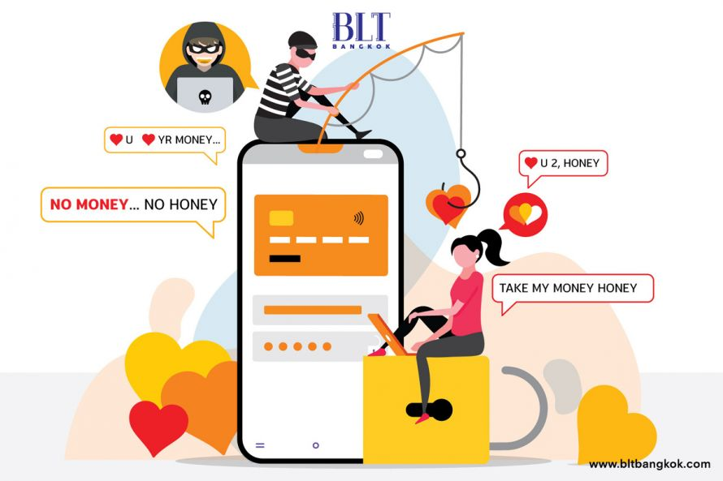

ภัยแฝงออนไลน์
- สารสนเทศมากมายมหาศาล ทั้งดีและไม่ดี ส่งตรงถึงห้องนอน
- คนแปลกหน้า/ผู้ไม่ประสงค์ดี ใช้ไอทีเป็นช่องทางหาเหยื่อ เราอาจตกเป็นผู้ถูกกระทำหรือเป็นผู้กระทำเสียเอง
- สังคมออนไลน์ การรวมกลุ่ม ค่านิยม แฟชั่น ทำให้เด็กและเยาวชนคล้อยตาม ตกเป็นทาสของเทคโนโลยี ความฟุ้งเฟ้อ ความเชื่อผิดๆ
- การที่ใช้งานง่าย แพร่หลาย ราคาถูก ทำให้เสี่ยงต่อการกระทำผิดกฎหมาย/ผิดศีลธรรม ทั้งที่รู้เท่าไม่ถึงการณ์หรือโดยเจตนาก็ตาม
- การใช้เวลากับของเล่นไอที/โลกออนไลน์มากจนเกินไป ส่งผลในด้านลบ อาจทำให้เสียโอกาสการเรียนรู้ในด้านอื่นๆ
